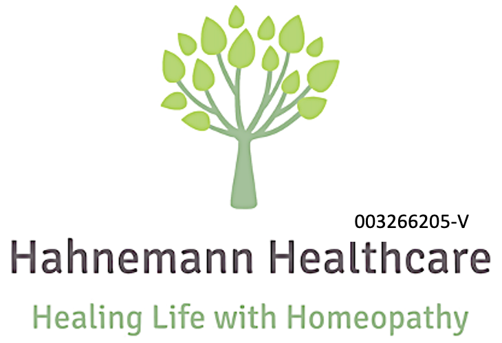

Terms and Conditions for Online Consultations
1. Consultation Fees
The fee for a consultation is RM150, which includes both the consultation and any prescribed homeopathic medication. This fee does not include postage if the medication is to be mailed to you; postage costs will be added to the total.
2. Consultation-Only Option
Patients may decide, after consultation, not to proceed with the prescribed homeopathic medication. In such cases, a consultation-only fee will be charged instead. The consultation fee ranges from RM80 to RM150, depending on the length and depth of the session.
3. Payment
All payments are due upon receiving the homeopathic medication, or at the end of the consultation if medication if opted out. Payments can be made via bank transfer or e-wallet, and payment details will be provided after the session together with an invoice.
4. Cancellation and Rescheduling
If you need to cancel or reschedule your appointment, please do so at least 48 hours in advance. Appointments canceled within less than 48 hours may incur a cancellation fee.
5. Privacy and Confidentiality
Your personal information and consultation details will be treated with the highest level of confidentiality and used solely for the purpose of your treatment.
6. Patient Responsibility
By proceeding with the session, you agree to provide accurate and complete information regarding your health. This ensures the most effective treatment can be recommended. While we will provide treatment recommendations based on our expertise, the patient is solely and fully responsible for the treatment choices and their outcomes, any decisions made regarding your health condition are entirely within your own discretion.
7. Acceptance of Terms
By proceeding with the session, either through clicking the consultation link or through any audio/video calls, you agree to these terms and conditions. Please review this document carefully before your session.
8. Disclaimer
Homeopathy works gently to facilitate the individual’s own healing ability. Our consultations and treatments are based on homeopathic principles and do not substitute conventional medical advice from other qualified healthcare professionals.
Last updated: 16 November 2024
在线咨询条款与条件
最后更新：2024年11月16日